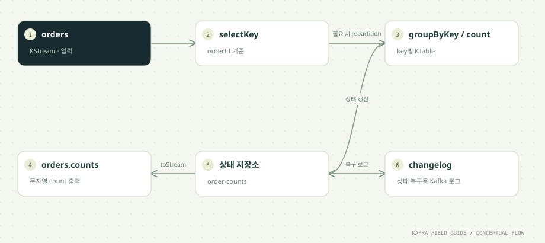

이 단원을 마치면
- Consumer 처리와 Streams topology를 비교한다
- KStream과 집계 KTable을 구분한다
- 상태 저장소·changelog·application.id를 설명한다
- 윈도우 집계와 이벤트 시간의 관계를 설명한다
01 / UNDERSTAND먼저, 원리를 이해합니다.
계산의 흐름을 topology로 표현합니다
Kafka Streams는 별도로 설치하는 서버 제품이 아니라 애플리케이션 안에 넣는 Java 라이브러리입니다. 이 실습의 OrderStreams도 평범한 main 메서드에서 실행됩니다. 개발자는 DSL로 처리 단계를 이어 붙입니다.
builder.<String,String>stream("orders")
.selectKey((key, value) -> OrderEvent.parse(value).orderId())
.groupByKey(Grouped.with(Serdes.String(), Serdes.String()))
.count(Materialized.as("order-counts"))
.toStream()
.mapValues(count -> Long.toString(count))
.to("orders.counts", Produced.with(Serdes.String(), Serdes.String()));위 코드는 흐름을 보이려고 예외 처리를 줄인 형태이며, 실제 소스는 아래 '03 코드 해설'에 있습니다. 이렇게 선언된 처리 단계의 그래프를 topology라고 부릅니다. Streams는 내부적으로 Consumer와 Producer를 만들어 입력 토픽을 읽고 결과를 씁니다. application.id가 Consumer Group ID 역할을 하므로, 같은 application.id로 인스턴스를 여러 개 띄우면 입력 파티션을 나눠 처리하고, 한 인스턴스가 죽으면 남은 인스턴스가 그 몫을 이어받습니다. 03단원의 Consumer Group 원리가 그대로 적용됩니다.
KStream과 KTable은 의미가 다릅니다
같은 레코드라도 어떻게 해석하느냐에 따라 의미가 달라집니다.
- KStream: 모든 레코드를 독립된 사건으로 봅니다.
order-0의 이벤트가 세 번 오면 사건이 세 번 일어난 것입니다. - KTable: 같은 key의 새 레코드를 '이전 값을 덮어쓰는 갱신'으로 봅니다.
order-0 = 3이 들어오면order-0의 현재 값은 3이고, 이전 값은 의미가 없습니다. value가 null인 레코드는 그 key의 삭제로 해석합니다.
count()는 KStream을 그룹별로 세어 KTable을 만듭니다. 이 KTable은 'key별 최신 누적 건수'라는 상태이며, toStream()은 그 상태가 바뀔 때마다 '바뀐 결과'를 다시 레코드 흐름으로 내보냅니다. 그래서 orders.counts 토픽에는 같은 key의 값이 여러 번, 점점 커지며 나타날 수 있습니다. 읽는 쪽은 key별로 가장 마지막 값을 현재 상태로 보면 됩니다.
여기서 세는 것은 매출 합계도, 서로 다른 주문의 수도 아닌 주문 ID별 이벤트 건수입니다. 무엇을 세는지 정확히 말할 수 있어야 결과를 오해하지 않습니다.
상태는 로컬 저장소와 changelog로 관리합니다
Materialized.as("order-counts")는 집계 상태를 담을 상태 저장소(state store)의 이름을 정합니다. 상태 저장소는 각 인스턴스의 로컬 디스크(state.dir)에 있으며, 이 실습은 Docker 볼륨의 /state/<application.id> 아래를 씁니다.
로컬 디스크만 믿으면 인스턴스가 사라질 때 상태도 사라집니다. 그래서 Streams는 저장소의 모든 변경을 changelog 토픽에 함께 기록합니다. 이름은 <application.id>-<저장소 이름>-changelog 규칙을 따라 이 실습에서는 order-counts-day11-order-counts-changelog가 됩니다. changelog는 key별 최신 값만 남기면 되므로 compaction 정책으로 만들어집니다(02단원).
또 하나의 내부 토픽이 있습니다. selectKey로 key를 바꾼 뒤 groupByKey로 집계하면, 같은 새 key의 레코드가 같은 파티션에 모이도록 데이터를 한 번 다시 써야 합니다. 이때 생기는 것이 repartition 토픽(<application.id>-order-counts-repartition)입니다. 브로커의 토픽 자동 생성이 꺼져 있어도 Streams는 Admin API로 내부 토픽을 직접 만듭니다. 내부 토픽의 복제 수와 디스크 사용량도 운영 대상이며, 이 실습은 환경에 따라 복제 수 1 또는 3을 지정합니다.
EOS와 업무 중복 제거는 다릅니다
이 실습의 Streams는 processing.guarantee=exactly_once_v2로 실행합니다(Kafka Streams 기본값은 at_least_once). 커밋 주기마다 입력 offset, changelog 기록, 출력 레코드를 09단원의 Kafka 트랜잭션 하나로 확정합니다. 처리 도중 인스턴스가 죽어도 '입력은 다시 읽었는데 상태에는 이미 반영된' 이중 집계가 생기지 않습니다.
하지만 이 보장은 입력 토픽에 실제로 들어 있는 레코드를 정확히 한 번씩 반영한다는 뜻입니다. 같은 eventId가 원본 토픽에 두 번 기록되어 있다면, Streams 입장에서는 서로 다른 레코드 두 건이므로 둘 다 셉니다. 10단원의 Outbox 실험에서 day10-0이 두 번 발행되었다면 day10-order-0의 count는 2가 됩니다.
업무 중복까지 걸러야 한다면 topology 안에 eventId 기준 중복 제거 단계를 직접 넣어야 합니다. 예를 들어 최근 eventId를 상태 저장소에 기억해 두고 이미 본 것은 버리는 처리기를 추가합니다. EOS는 처리 엔진의 보장이고, 업무 중복 제거는 애플리케이션의 책임입니다.
출력은 모든 중간값을 뜻하지 않습니다
order-0의 이벤트가 1초 사이에 4건 들어오면 count는 1, 2, 3, 4로 바뀝니다. 그렇다고 orders.counts에 네 줄이 모두 나온다는 보장은 없습니다. Streams는 상태 저장소 앞에 레코드 캐시를 두고, 커밋 주기 동안 같은 key의 갱신을 모아 마지막 값만 내보낼 수 있습니다. 이 실습은 commit.interval.ms=1000이므로 대략 1초마다 key별 최신 값이 나갑니다. 출력이 줄어드는 만큼 하류의 부담과 changelog 기록량도 줄어듭니다.
그래서 출력 토픽을 해석할 때는 '중간값이 몇 번 나왔는가'가 아니라 key별 마지막 값을 비교해야 합니다.
application.id를 바꾸면 완전히 다른 애플리케이션이 됩니다. Consumer Group, 상태 저장소, 내부 토픽이 모두 새로 만들어지고 입력을 처음부터 다시 읽습니다. 같은 계산을 처음부터 다시 하고 싶을 때는 새 ID를 쓰고, 이어서 처리하려면 같은 ID를 유지합니다.
시간순으로 따라가기: 같은 key가 들어올 때 상태와 출력
commit.interval.ms=1000 기준의 예시입니다. 실제로 캐시가 언제 비워지는지는 캐시 크기와 커밋 시점에 따라 달라집니다.
| 시점 | 입력 (orders) | 상태 저장소 order-counts | changelog | orders.counts 출력 |
|---|---|---|---|---|
| 0.1초 | order-0 이벤트 #1 | order-0 = 1 | 캐시에 보관 중 | 없음 |
| 0.4초 | order-0 이벤트 #2 | order-0 = 2 | 캐시에 보관 중 | 없음 |
| 1.0초 (커밋) | 없음 | order-0 = 2 | order-0 → 2 기록 | order-0 = 2 (1은 나가지 않음) |
| 1.3초 | day10-order-0 이벤트 (eventId day10-0) | day10-order-0 = 1 | 캐시에 보관 중 | 없음 |
| 1.5초 | 같은 eventId day10-0이 한 번 더 | day10-order-0 = 2 | 캐시에 보관 중 | 없음 |
| 2.0초 (커밋) | 없음 | 변화 없음 | day10-order-0 → 2 기록 | day10-order-0 = 2 |
| 재시작 | 같은 application.id로 실행 | 로컬 저장소와 changelog에서 복구 | 마지막 기록 이후만 다시 읽음 | 새 입력이 올 때만 출력 |
커밋 시점에는 입력 offset, changelog, 출력이 exactly_once_v2 트랜잭션 하나로 함께 확정됩니다.
KStream · KTable · GlobalKTable 비교
| 항목 | KStream | KTable | GlobalKTable |
|---|---|---|---|
| 레코드의 의미 | 독립된 사건 | key별 최신 값으로의 갱신 | key별 최신 값으로의 갱신 |
| 같은 key의 새 레코드 | 사건이 하나 더 일어남 | 이전 값을 덮어씀 | 이전 값을 덮어씀 |
| value가 null인 레코드 | 그냥 하나의 레코드 | 그 key의 삭제 | 그 key의 삭제 |
| 데이터가 놓이는 곳 | 인스턴스마다 담당 파티션만 | 인스턴스마다 담당 파티션만 | 모든 인스턴스가 토픽 전체를 복제 |
| 대표 용도 | 이벤트 흐름 가공, 필터, 변환 | 집계 결과, key별 현재 상태 | 작은 참조 데이터(코드표, 장비 정보)와의 조인 |
| 이 실습 | orders 입력 | count() 결과 | 쓰지 않음 |
이 실습의 Streams 설정과 의미
| 설정 | Kafka Streams 기본값 | 이 실습의 값 | 의미 |
|---|---|---|---|
application.id | 없음 (필수) | 명령 인자 (order-counts-day11 등) | Consumer Group ID이자 내부 토픽·상태 디렉터리 이름의 접두사 |
processing.guarantee | at_least_once | exactly_once_v2 | 입력 offset·상태·출력을 트랜잭션으로 함께 확정 |
commit.interval.ms | 30000 (EOS일 때 100) | 1000 | 커밋과 캐시 비우기 주기. 짧을수록 출력이 잦고 지연이 짧음 |
state.dir | 임시 디렉터리 아래 kafka-streams | /state/<application.id> | 로컬 상태 저장소 위치. 환경 간 공유 금지 |
replication.factor | -1 (브로커의 default.replication.factor를 따름) | 단일 1, 3노드 3 | changelog·repartition 내부 토픽의 복제 수 |
auto.offset.reset | earliest (Streams가 Consumer 기본값 latest를 바꿔 둠) | earliest (코드에서도 명시) | 새 application.id는 입력의 처음부터 읽음 |
기본값은 Kafka Streams 설정 문서를 기준으로 하며 버전에 따라 달라질 수 있으니 공식 문서를 함께 확인하세요.
한 걸음 더: 함께 알아둘 개념
기본 흐름을 이해했다면, 실무에서 곧바로 마주치는 관련 개념을 이어서 정리합니다.
윈도우 집계와 이벤트 시간
이 실습의 count는 처음부터 지금까지의 누적값입니다. 실무에서는 '최근 1분 동안 몇 건인가'처럼 시간 구간별 집계가 더 흔하며, Streams는 이를 윈도우로 표현합니다.
- Tumbling: 겹치지 않는 고정 구간입니다. 10:00~10:01, 10:01~10:02처럼 나뉩니다.
- Hopping: 크기와 이동 간격이 다른 고정 구간입니다. '5분 크기, 1분 간격'이면 구간이 서로 겹칩니다.
- Sliding: 레코드 사이의 시간 차이를 기준으로 움직이는 구간입니다.
- Session: 활동이 끊긴 시간(inactivity gap)으로 구간을 나눕니다. 사용자 세션이나 장비의 연속 동작 구간에 맞습니다.
윈도우는 이벤트 시간을 기준으로 합니다. 기본적으로는 레코드의 timestamp를 쓰고, 필요하면 TimestampExtractor로 value 안의 발생 시각을 꺼내 쓰게 할 수 있습니다. 네트워크 지연 때문에 10:00:50에 일어난 일이 10:01:20에 도착하면 이미 지난 구간의 레코드입니다. grace period를 두면 구간이 끝난 뒤에도 그 시간만큼은 늦게 온 레코드를 받아 결과를 고치고, 그보다 늦은 레코드는 버립니다. grace를 길게 잡을수록 정확도는 오르지만 최종 결과가 늦게 확정됩니다.
Task와 스레드: 병렬성의 단위
Streams는 topology를 task 단위로 나눠 실행합니다. 입력 토픽의 파티션 하나가 task 하나에 대응하며, 각 task는 자기 파티션의 상태 저장소를 따로 가집니다. 이 실습의 topology는 repartition 토픽을 경계로 두 부분으로 나뉘고, 입력 orders가 파티션 3개이므로 각 부분에 task가 3개씩 생깁니다.
task는 스레드에 배정되고, 스레드는 인스턴스 안에 있습니다. 스레드 수는 num.stream.threads(기본 1)로, 인스턴스 수는 같은 application.id로 몇 개를 띄우느냐로 정합니다. 어떻게 늘려도 동시에 일하는 task 수는 입력 파티션 수를 넘지 못합니다. 03단원의 'Consumer 수 > 파티션 수면 남는 Consumer가 논다'와 같은 원리입니다.
인스턴스가 죽으면 그 task는 다른 인스턴스로 옮겨지고, 새 담당자는 changelog를 읽어 상태를 복구한 뒤 처리를 시작합니다. 상태가 크면 복구가 오래 걸리므로 num.standby.replicas(기본 0)로 다른 인스턴스에 상태 사본을 미리 유지해 전환 시간을 줄일 수 있습니다.
조인과 GlobalKTable, 상태 조회
두 토픽을 key로 조인하려면 보통 같은 key가 같은 번호의 파티션에 있어야(co-partitioning) 합니다. 두 토픽의 파티션 수와 key 지정 방식이 같아야 한다는 뜻이며, 맞지 않으면 Streams가 repartition을 거치거나 오류를 냅니다.
장비 정보나 코드표처럼 작고 자주 바뀌지 않는 참조 데이터라면 GlobalKTable이 편합니다. 모든 인스턴스가 그 토픽 전체를 복제해 들고 있으므로 파티션을 맞추지 않아도 조인할 수 있습니다. 대신 인스턴스마다 전체 데이터만큼 저장 공간과 시작 시간이 듭니다.
상태 저장소는 다른 서비스가 직접 조회할 수도 있습니다(Interactive Queries). KafkaStreams#store로 로컬 저장소를 읽어 HTTP API로 노출하면, 집계 결과를 별도 DB에 옮기지 않고 바로 응답할 수 있습니다. 인스턴스가 여러 개라면 어느 인스턴스가 해당 key를 가졌는지 찾아 요청을 넘기는 장치를 직접 만들어야 합니다.
Kafka 4.2의 Streams 변화
Kafka 4.2 릴리스 공지에는 Streams 관련 변화가 두 가지 눈에 띕니다.
- Streams 리밸런스 프로토콜(KIP-1071): task 배정을 브로커 쪽으로 옮긴 새 프로토콜이 '제한된 기능 범위로' GA가 되었습니다. 03단원에서 본 Consumer용 새 프로토콜(KIP-848)과 같은 방향의 변화입니다. 이 실습은 기존 방식으로 실행합니다.
- 예외 처리기의 DLQ 지원(KIP-1034): 처리 중 예외가 난 레코드를 예외 처리기가 Dead Letter Queue로 보낼 수 있게 되었습니다. 이 실습의
OrderStreams는 잘못된 입력이 오면 topology 전체를 멈추는데, 운영에서는 07단원처럼 실패 레코드를 따로 보내고 계속 처리하는 편이 안정적입니다.
새 기능을 쓰기 전에는 사용하는 버전의 공식 문서에서 지원 범위와 제약을 확인하세요.
02 / FOLLOW THE EVENT데이터의 이동을 따라갑니다.


원리를 이해하기 위한 단계 모델입니다. 네트워크 시간이나 장애 판정을 재현하지 않습니다.
03 / READ THE CODE현업 패턴을 코드로 읽습니다.
아래 코드는 함께 제공된 실행 소스에서 발췌했습니다. 전체 클래스와 설정은 소스 파일에서 확인할 수 있습니다.
StreamsBuilder builder = new StreamsBuilder();
builder.<String,String>stream("orders")
.selectKey((key,value) -> {
try { return OrderEvent.parse(value).orderId(); }
catch (Exception e) { throw new IllegalArgumentException("Validate or DLT invalid input before this topology",e); }
})
.groupByKey(Grouped.with(Serdes.String(),Serdes.String()))
.count(Materialized.as("order-counts"))
.toStream()
.mapValues(count -> Long.toString(count))
.to("orders.counts",Produced.with(Serdes.String(),Serdes.String()));소스: 고급/src/main/java/study/kafka/OrderStreams.java · 27행부터
selectKey다음의groupByKey가 key 기반 집계의 경계입니다. key가 바뀌었으므로 Streams가 repartition 토픽을 topology에 추가합니다.count(Materialized.as("order-counts"))의 이름이 상태 저장소와 내부 토픽 이름(...-order-counts-changelog,...-order-counts-repartition)에 쓰입니다.- 출력은 Long을 문자열로 바꾸고 String Serde를 명시해, 일반
consumer명령으로도 읽을 수 있게 했습니다. - 유효하지 않은 입력은
selectKey안에서 예외를 던져 topology를 멈춥니다. 운영에서는 앞 단계의 검증, DLT, 또는 명시적인 예외 처리 정책을 설계해야 합니다.
04 / MAKE IT REAL이제, 직접 확인합니다.
PowerShell에서 저장소 루트로 이동한 뒤 실행하세요. 01단원의 up → build → init이 선행되어야 합니다. 종료된 환경은 up으로 다시 시작합니다. 이후 단원의 max=0은 입력이 끊긴 뒤 25초까지 읽습니다. 대응 실습 안내 파일 ↗
01. 60초 동안 집계
.\실습\study.ps1 run streams 60 order-counts-day11STREAMS 상태가 RUNNING으로 이동하고 지정 시간 후 종료합니다.
STREAMS CREATED -> REBALANCING
STREAMS REBALANCING -> RUNNING
STREAMS RUNNING -> PENDING_SHUTDOWN
STREAMS PENDING_SHUTDOWN -> NOT_RUNNING
[main] WARN org.apache.kafka.streams.StreamsConfig - Processing exception handler is not enabled for the GlobalThread. ...
[...-StreamThread-1] WARN org.apache.kafka.clients.NetworkClient - ... {order-counts-day11-order-counts-repartition=UNKNOWN_TOPIC_OR_PARTITION}STREAMS 줄은 KafkaStreams의 상태 변화입니다. REBALANCING은 그룹에 참여해 task를 배정받는 중, RUNNING은 처리 중이라는 뜻이며, 60초가 지나면 close()로 정상 종료합니다. 표준 출력과 경고의 순서는 섞여 보일 수 있습니다.
두 WARN은 예상된 것입니다. 첫 번째는 예외 처리기의 기본 동작이 향후 버전에서 바뀐다는 안내이고, 두 번째는 Streams가 repartition 토픽을 만들기 직전에 메타데이터를 조회해서 생기는 일시적 경고로 스스로 회복됩니다. 새 application.id이므로 orders의 처음부터 읽어 이전 단원의 이벤트까지 모두 셉니다.
02. 다른 터미널에서 입력
.\실습\study.ps1 run producer 12 orders day11주문별 이벤트가 입력됩니다. 이전 orders 기록도 같은 app의 진행 상태에 따라 집계합니다.
SENT event=day11-0 key=order-0 partition=1 offset=40
SENT event=day11-1 key=order-1 partition=1 offset=41
SENT event=day11-2 key=order-2 partition=0 offset=20
...Streams가 RUNNING인 60초 안에 실행해야 합니다. order-0, order-1, order-2에 각각 4건씩 들어가며, Streams는 커밋 주기(1초)마다 바뀐 count를 내보냅니다.
offset 숫자는 예시입니다. 이 명령이 Streams 종료 뒤에 실행되었더라도 데이터는 orders에 남아 있으므로, 다음에 같은 application.id로 Streams를 실행하면 커밋된 위치부터 이어서 반영합니다.
03. 결과 조회
.\실습\study.ps1 run consumer count-reader-day11 0 orders.countskey별 count 문자열이 출력됩니다. 중간값 전부가 출력될 필요는 없습니다.
ASSIGNED [orders.counts-0, orders.counts-1, orders.counts-2]
RECEIVED group=count-reader-day11 key=order-0 partition=1 offset=0 value=10
RECEIVED group=count-reader-day11 key=order-1 partition=1 offset=1 value=10
RECEIVED group=count-reader-day11 key=order-2 partition=0 offset=0 value=1
RECEIVED group=count-reader-day11 key=order-2 partition=0 offset=2 value=10
RECEIVED group=count-reader-day11 key=day10-order-0 partition=0 offset=3 value=2
...
CONSUMED 9value가 그 시점의 key별 누적 이벤트 건수입니다. 같은 key(order-2)가 1과 10처럼 여러 번 나오는 것은 커밋 주기마다 내보낸 갱신이며, 마지막 값이 현재 상태입니다. 1과 10 사이의 값들은 캐시에서 합쳐져 나오지 않았습니다.
day10-order-0의 값이 2라면 10단원에서 Relay가 같은 이벤트를 두 번 발행했기 때문입니다. exactly_once_v2로 실행해도 입력에 실제로 두 건이 있으면 둘 다 셉니다. 숫자와 줄 수는 토픽에 쌓인 데이터에 따라 달라집니다.
04. 같은 application.id로 재시작
.\실습\study.ps1 run streams 30 order-counts-day11기존 입력 offset과 상태에서 복구하여 이어 처리합니다.
STREAMS CREATED -> REBALANCING
STREAMS REBALANCING -> RUNNING
STREAMS RUNNING -> PENDING_SHUTDOWN
STREAMS PENDING_SHUTDOWN -> NOT_RUNNING같은 application.id이므로 Streams는 커밋된 입력 위치와 로컬 상태 저장소(streams-state 볼륨)를 그대로 이어받습니다. 이미 반영한 이벤트를 다시 세지 않으므로, 새 입력이 없으면 orders.counts에 새 출력도 생기지 않습니다.
이어서 계산하는 모습을 보려면 이 30초 동안 다른 터미널에서 producer를 한 번 더 실행하고 결과를 다시 조회하세요. 예를 들어 order-0이 10이었다면 14처럼 이전 값에서 이어집니다. 로컬 상태가 없는 새 인스턴스였다면 changelog 토픽을 읽어 같은 상태를 복구한 뒤 시작합니다. .\실습\study.ps1 topics로 ...-changelog와 ...-repartition 내부 토픽도 확인해 보세요.
한 걸음 더 실험하기
- 새
application.id로 실행한 결과와 기존application.id로 재시작한 결과를 비교하세요. 새 ID는 처음부터 다시 세고, 기존 ID는 이어서 셉니다. - 같은 runId로 Producer를 두 번 실행해, EOS가 업무 eventId 중복 제거와 다른 이유를 count 값으로 확인하세요.
.\실습\study.ps1 topics출력에서 changelog 토픽의 설정(cleanup.policy)과 repartition 토픽의 파티션 수를 찾아보세요.
05 / APPLY IT로그 수집 파이프라인에 적용하면
같은 개념이 대용량 장비 로그 수집(수집 에이전트 → 수집 서버 → Kafka → 로그 저장소)에서는 어떻게 쓰이는지 정리합니다. 특정 회사나 장비가 아닌 일반적인 구성을 기준으로 합니다.
장비별 오류 건수를 1분 단위로 실시간 집계하기
로그 파이프라인에서 Streams가 가장 잘 맞는 일은 저장 전에 흐름 위에서 바로 계산하는 일입니다. 예를 들어 '장비별 ERROR 로그가 1분에 몇 건인가'를 실시간으로 세어, 기준을 넘으면 알람 토픽으로 보내는 처리기를 생각해 보세요.
- key는 장비 ID: 로그를 장비 ID로
selectKey한 뒤 그룹화합니다. 수집 단계에서 이미 장비 ID를 key로 썼다면 repartition 없이 집계할 수 있습니다. - 1분 Tumbling 윈도우: ERROR만
filter로 남긴 뒤 1분 Tumbling 윈도우로count()합니다. 결과는 '장비 A, 10:03~10:04, 17건'처럼 구간별로 나옵니다. - 이벤트 시간과 늦은 로그: 에이전트가 네트워크 장애 동안 로그를 버퍼에 쌓았다가 한꺼번에 보내면, 도착 시각이 아닌 장비 시각 기준으로 세야 정확합니다.
TimestampExtractor로 value의 장비 시각을 쓰고, 버퍼링 시간을 고려해 grace period를 정합니다. 장비 시계가 틀어진 경우도 있으므로 터무니없는 시각의 로그는 미리 걸러냅니다. - 확정된 결과만 알람으로: 윈도우 결과는 늦은 레코드 때문에 여러 번 갱신될 수 있습니다. 알람이 여러 번 울리지 않게 하려면 구간이 닫힌 뒤 최종값만 내보내도록(
suppress) 설계합니다.
원본 로그 전체의 영구 저장과 검색은 로그 저장소의 몫이고, Streams는 실시간으로 봐야 하는 소수의 지표를 계산하는 데 씁니다. 처리량은 입력 토픽의 파티션 수가 상한이므로, 장비 수가 늘 것을 고려해 파티션 수를 정합니다(02단원).
06 / CHECK YOUR UNDERSTANDING설명할 수 있으면, 내 지식입니다.
자주 묻는 질문
Kafka Streams를 쓰려면 별도 서버를 설치해야 하나요?
아닙니다. Streams는 Java 라이브러리이므로 의존성을 추가하고 애플리케이션 안에서 실행합니다. 필요한 것은 Kafka 클러스터뿐입니다. 처리량을 늘리려면 같은 application.id로 애플리케이션 인스턴스를 더 띄우면 되고, 그 상한은 입력 토픽의 파티션 수입니다.
실행할 때 나오는 WARN 로그는 문제가 있다는 뜻인가요?
이 실습에서 보이는 두 경고는 정상입니다. 하나는 예외 처리기 관련 설정의 기본 동작이 향후 버전에서 바뀐다는 안내이고, 다른 하나는 repartition 토픽이 만들어지기 전 잠깐 UNKNOWN_TOPIC_OR_PARTITION이 보고되는 일시적 경고입니다. 상태가 RUNNING으로 바뀌고 결과가 나온다면 처리는 정상입니다. 같은 경고가 계속 반복되거나 ERROR가 나오면 그때 원인을 확인합니다.
orders.counts에 같은 key가 여러 번 나오는데 무엇을 믿어야 하나요?
가장 마지막 값을 믿습니다. count() 결과는 KTable이고, toStream()은 상태가 바뀔 때마다 그 결과를 내보냅니다. 출력 토픽을 KTable로 다시 읽거나, compaction 정책의 토픽으로 만들어 key별 최신 값만 남기는 방법도 있습니다.
application.id를 바꾸면 이전 상태와 내부 토픽은 어떻게 되나요?
새 ID는 완전히 새 애플리케이션으로 취급되어 입력을 처음부터 다시 읽고 새 상태와 내부 토픽을 만듭니다. 이전 ID의 내부 토픽과 로컬 상태는 자동으로 지워지지 않습니다. 같은 ID로 처음부터 다시 계산하고 싶다면 Kafka에 포함된 kafka-streams-application-reset 도구로 입력 위치와 내부 토픽을 초기화하는 방법이 있습니다.
Streams의 Exactly Once를 켜면 중복 이벤트도 한 번만 세나요?
아닙니다. exactly_once_v2는 장애와 재시작이 있어도 입력 토픽의 각 레코드를 상태와 출력에 정확히 한 번 반영한다는 보장입니다. 원본 토픽에 같은 eventId의 레코드가 두 건 들어 있다면 Streams에게는 서로 다른 두 레코드이므로 둘 다 셉니다. 업무 중복 제거는 topology 안에 직접 구현해야 합니다.
이벤트 count를 만든 KTable은 무엇을 나타내나요?
원리를 읽고 실습 결과를 확인했나요?
학습 기록은 이 브라우저에만 저장됩니다.